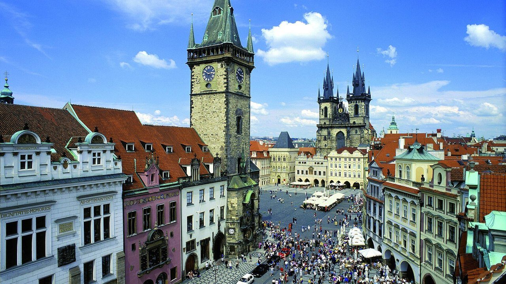

Race, Prague Old Town

Behind
Best +0:01
371W
Target 418 W-47 W
- Cadence
- 87rpm
- Heart
- 140bpm
- Speed
- 26.5km/h
Work7 of 20
1:27
Next: · 2:00 at level 21
-0.3%
9 m climbed
6.12 km
19
Resistance / 32
Solo races your best-time ghost: position reads Ahead or Behind, and solo alone gets a Pause button. Frozen at 14:33.